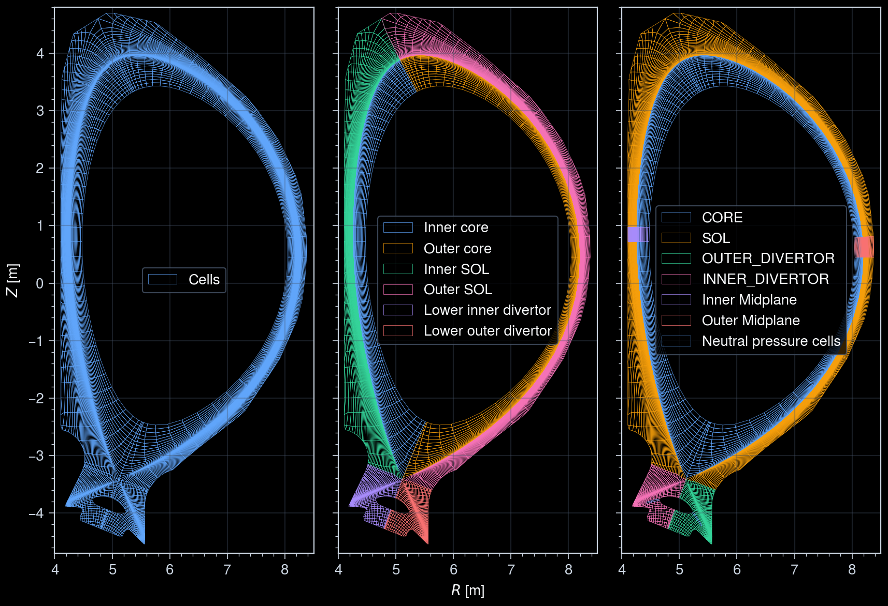
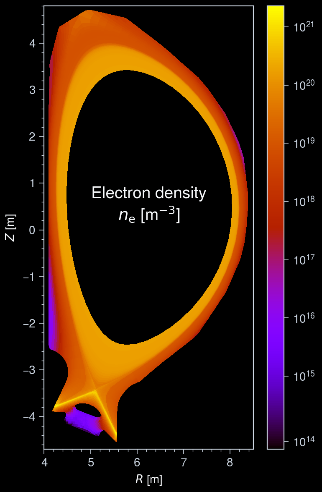
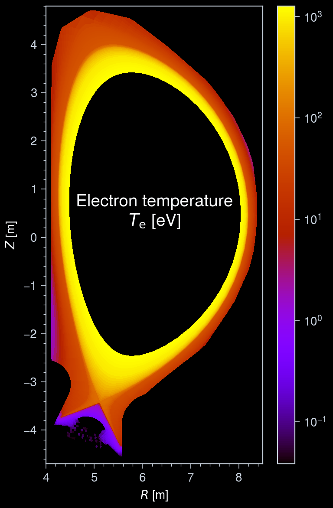
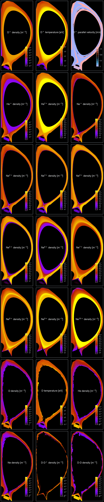
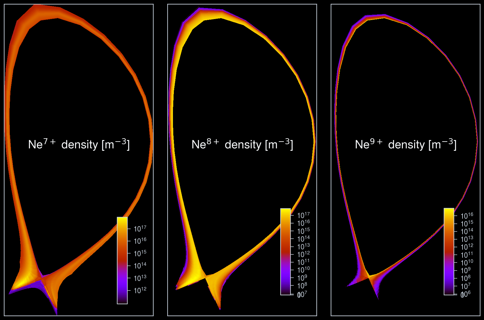

Interactive online version:
Edge Plasma profiles¶
This notebook demonstrates how to load and visualize edge plasma profiles using the cherab.imas interface. Here, we propose how to visualize edge plasmas with grid meshes defined in the IMAS data structure.
The example test data was calculated by SOLPS-ITER for an ITER 15 MA H-mode scenario.
[1]:
from typing import TYPE_CHECKING
import numpy as np
import ultraplot as uplt
from imas import DBEntry
from matplotlib.colors import SymLogNorm
from rich import print as rprint
from cherab.imas.datasets import iter_jintrac, iter_solps
from cherab.imas.ids.common import get_ids_time_slice
from cherab.imas.ids.common.ggd import load_grid
from cherab.imas.ids.edge_profiles import load_edge_species
if TYPE_CHECKING:
from cherab.imas.ggd import UnstructGrid2D
# Set dark background for plots
uplt.rc.style = "dark_background"
Define a function to plot edge plasma profiles¶
[2]:
def plot_grid_quantity(
ax: uplt.axes.Axes,
grid: UnstructGrid2D,
quantity: np.ndarray,
title: str = "",
title_center: str = "",
clabel: str = "",
logscale: bool = False,
symmetric: bool = False,
cbar_kwargs: dict = None,
) -> uplt.axes.Axes:
"""Plot a quantity defined on a grid."""
ax = grid.plot_tri_mesh(data=quantity, ax=ax)
if logscale:
# Plot lowest values (mainly 0's) on linear map, as log(0) = -inf.
linthresh = np.percentile(np.unique(quantity), 1)
norm = SymLogNorm(
linthresh=float(max(linthresh, 1.0e-10 * quantity.max())),
base=10,
)
ax.collections[0].set_norm(norm)
if symmetric:
vmax = np.abs(quantity.max())
ax.collections[0].set_clim(-vmax, vmax)
ax.collections[0].set_cmap("berlin")
else:
ax.collections[0].set_cmap("gnuplot")
ax.colorbar(
ax.collections[0],
formatter="log" if logscale else None,
tickminor=True,
**(cbar_kwargs or {}),
)
if title_center:
ax.text(
0.5,
0.55,
title_center,
transform=ax.transAxes,
ha="center",
va="center",
fontsize=14,
)
ax.format(
aspect="equal",
xlabel="$R$ [m]",
ylabel="$Z$ [m]",
xlocator=1,
ylocator=1,
title=title,
)
return ax
Retrieve the sample data¶
[3]:
path = iter_solps()
Downloading file 'iter_scenario_123364_1.nc' from 'doi:10.5281/zenodo.17062699/iter_scenario_123364_1.nc' to '/home/runner/.cache/cherab/imas'.
Load grid and species data¶
Plot all grid subsets¶
In edge_profiles IDS, there are multiple grid subsets defined. Here, we see what grid subsets are available and plot them all.
[4]:
# Load edge_profiles IDs
with DBEntry(path, "r") as entry:
ids = get_ids_time_slice(
entry,
"edge_profiles",
time=0,
)
# Load grid object
grid, subsets, subset_id = load_grid(
ids.grid_ggd[0],
with_subsets=True,
)
# Print available grid subsets
rprint("Available grid subsets:", subset_id)
08:30:07 INFO Parsing data dictionary version 4.1.1 @dd_zip.py:89
08:30:07 INFO Parsing data dictionary version 4.0.0 @dd_zip.py:89
/tmp/ipykernel_2966/1326969991.py:3: RuntimeWarning: The 'get_slice' method is not implemented for the URI '/home/runner/.cache/cherab/imas/iter_scenario_123364_1.nc'. Falling back to 'get' method because the returned IDS contains a single time slice.
ids = get_ids_time_slice(
Available grid subsets: { 'Cells': 5, 'Inner core': -1, 'Inner SOL': -2, 'Lower inner divertor': -3, 'Outer core': -5, 'Outer SOL': -6, 'Lower outer divertor': -8, 'Neutral pressure cells': -101, 'CORE': 22, 'SOL': 23, 'OUTER_DIVERTOR': 24, 'INNER_DIVERTOR': 25, 'Inner Midplane': 12, 'Outer Midplane': 11 }
[5]:
subset_groups = [
[
"Cells",
],
[
"Inner core",
"Outer core",
"Inner SOL",
"Outer SOL",
"Lower inner divertor",
"Lower outer divertor",
],
[
"CORE",
"SOL",
"OUTER_DIVERTOR",
"INNER_DIVERTOR",
"Inner Midplane",
"Outer Midplane",
"Neutral pressure cells",
],
]
fig, axs = uplt.subplots(ncols=len(subset_groups))
for ax, subset_names in zip(axs, subset_groups, strict=True):
for i, subset_name in enumerate(subset_names):
grid_subset = grid.subset(subsets[subset_name])
grid_subset.plot_mesh(ax=ax, label=subset_name, edgecolor=f"C{i}")
ax.legend(ncols=1, loc="center")
axs.format(
xlim=(4.0, 8.5),
ylim=(-4.7, 4.8),
grid=True,
xlocator=1,
ylocator=1,
tickminor=True,
)

Load edge species data¶
We choose the "Cells" subset covering the entire edge region and load the corresponding edge species data. The edge_profiles IDS contains multiple species, and we can choose which one to visualize.
[6]:
grid_cells = grid.subset(subsets["Cells"])
composition = load_edge_species(
ids.ggd[0],
grid_subset_index=subset_id["Cells"],
split_ion_bundles=False,
)
rprint(composition)
Warning! Using average ion temperature for the D ion (z=+1).
Warning! Using average ion temperature for the He ion (z=+1).
Warning! Using average ion temperature for the He ion (z=+2).
Warning! Using average ion temperature for the Ne ion (z=+1).
Warning! Using average ion temperature for the Ne ion (z=+2).
Warning! Using average ion temperature for the Ne ion (z=+3).
Warning! Using average ion temperature for the Ne ion (z=+4).
Warning! Using average ion temperature for the Ne ion (z=+5).
Warning! Using average ion temperature for the Ne ion (z=+6).
Warning! Using average ion temperature for the Ne ion (z=+7).
Warning! Using average ion temperature for the Ne ion (z=+8).
Warning! Using average ion temperature for the Ne ion (z=+9).
Warning! Using average ion temperature for the Ne ion (z=+10).
SpeciesComposition ├── electron │ ├── density: shape=(6027,) │ ├── temperature: shape=(6027,) │ └── velocity.parallel: shape=(6027,) ├── ion (13) │ ├── D + │ │ ├── density: shape=(6027,) │ │ ├── temperature: shape=(6027,) │ │ └── velocity.parallel: shape=(6027,) │ ├── He + │ │ ├── density: shape=(6027,) │ │ ├── temperature: shape=(6027,) │ │ └── velocity.parallel: shape=(6027,) │ ├── He 2+ │ │ ├── density: shape=(6027,) │ │ ├── temperature: shape=(6027,) │ │ └── velocity.parallel: shape=(6027,) │ ├── Ne + │ │ ├── density: shape=(6027,) │ │ ├── temperature: shape=(6027,) │ │ └── velocity.parallel: shape=(6027,) │ ├── Ne 2+ │ │ ├── density: shape=(6027,) │ │ ├── temperature: shape=(6027,) │ │ └── velocity.parallel: shape=(6027,) │ ├── Ne 3+ │ │ ├── density: shape=(6027,) │ │ ├── temperature: shape=(6027,) │ │ └── velocity.parallel: shape=(6027,) │ ├── Ne 4+ │ │ ├── density: shape=(6027,) │ │ ├── temperature: shape=(6027,) │ │ └── velocity.parallel: shape=(6027,) │ ├── Ne 5+ │ │ ├── density: shape=(6027,) │ │ ├── temperature: shape=(6027,) │ │ └── velocity.parallel: shape=(6027,) │ ├── Ne 6+ │ │ ├── density: shape=(6027,) │ │ ├── temperature: shape=(6027,) │ │ └── velocity.parallel: shape=(6027,) │ ├── Ne 7+ │ │ ├── density: shape=(6027,) │ │ ├── temperature: shape=(6027,) │ │ └── velocity.parallel: shape=(6027,) │ ├── Ne 8+ │ │ ├── density: shape=(6027,) │ │ ├── temperature: shape=(6027,) │ │ └── velocity.parallel: shape=(6027,) │ ├── Ne 9+ │ │ ├── density: shape=(6027,) │ │ ├── temperature: shape=(6027,) │ │ └── velocity.parallel: shape=(6027,) │ └── Ne 10+ │ ├── density: shape=(6027,) │ ├── temperature: shape=(6027,) │ └── velocity.parallel: shape=(6027,) ├── neutral (3) │ ├── D │ │ ├── density: shape=(6027,) │ │ └── temperature: shape=(6027,) │ ├── He │ │ ├── density: shape=(6027,) │ │ └── temperature: shape=(6027,) │ └── Ne │ ├── density: shape=(6027,) │ └── temperature: shape=(6027,) └── molecule (2) ├── D-D + │ ├── density: shape=(6027,) │ └── temperature: shape=(6027,) └── D-D ├── density: shape=(6027,) └── temperature: shape=(6027,)
Plot edge plasma profiles¶
Electron profiles¶
[7]:
# Electron density
fig, ax = uplt.subplots()
ax = plot_grid_quantity(
ax,
grid_cells,
composition.electron.density,
title_center="Electron density\n$n_\\mathrm{e}$ [m$^{-3}$]",
logscale=True,
)
ax.format(
xlim=(4.0, 8.5),
ylim=(-4.7, 4.8),
xlocator=1,
ylocator=1,
tickminor=True,
)
# Electron temperature
fig, ax = uplt.subplots()
ax = plot_grid_quantity(
ax,
grid_cells,
composition.electron.temperature,
title_center="Electron temperature\n$T_\\mathrm{e}$ [eV]",
logscale=True,
)
ax.format(
xlim=(4.0, 8.5),
ylim=(-4.7, 4.8),
xlocator=1,
ylocator=1,
tickminor=True,
)
/home/runner/work/imas/imas/.pixi/envs/docs/lib/python3.14/site-packages/ultraplot/axes/plot.py:3011: UserWarning: Positional parameter c has no effect when the keyword facecolors is given
obj = getattr(super(), name)(*args, **kwargs)
/home/runner/work/imas/imas/.pixi/envs/docs/lib/python3.14/site-packages/ultraplot/axes/plot.py:3011: UserWarning: Positional parameter c has no effect when the keyword facecolors is given
obj = getattr(super(), name)(*args, **kwargs)


Species profiles¶
[8]:
# Store all data to plot in a list
data: list[tuple[np.ndarray, dict]] = []
for profile in composition.ion + composition.neutral + composition.molecule:
charge = profile.species.z_min
if (element := profile.species.element) is not None:
symbol = element.symbol
elif profile.species.elements:
symbol = "-".join(element.symbol for element in profile.species.elements)
else:
symbol = "Unknown"
if charge == 0:
name = symbol
elif charge == 1:
name = f"{symbol}$^+$"
else:
name = f"{symbol}$^{{{charge}+}}$"
# Density
data.append(
(
profile.density,
dict(
title_center=f"{name} density [m$^{{-3}}$]",
logscale=True,
),
)
)
if (element := profile.species.element) is not None and element.atomic_number == 1:
# Temperature
if profile.temperature is not None and np.any(profile.temperature):
data.append(
(
profile.temperature,
dict(
title_center=f"{name} temperature [eV]",
logscale=True,
),
)
)
if charge:
# Velocity profiles
vpar = profile.velocity.parallel
if vpar is not None and np.any(vpar):
data.append(
(
vpar,
dict(
title_center=f"{name} parallel velocity [m/s]",
symmetric=True,
),
)
)
else:
for vtype in {"radial", "poloidal", "phi"}:
velocity = getattr(profile.velocity, vtype)
if velocity is not None and np.any(velocity):
data.append(
(
velocity,
dict(
title_center=f"{name} {vtype} velocity [m/s]",
symmetric=True,
),
)
)
# Plot all data
fig, axes = uplt.subplots(
ncols=3,
nrows=int(np.ceil(len(data) / 3)),
)
for i_ax, (quantity, kwargs) in enumerate(data):
ax = plot_grid_quantity(
axes[i_ax],
grid_cells,
quantity,
**kwargs,
cbar_kwargs=dict(
loc="lr",
orientation="vertical",
ticklabelsize="small",
length=5,
frame=False,
),
)
axes.format(
xlabel="",
ylabel="",
xtickloc="neither",
ytickloc="neither",
linestyle="none",
grid=False,
)
/home/runner/work/imas/imas/.pixi/envs/docs/lib/python3.14/site-packages/ultraplot/axes/plot.py:3011: UserWarning: Positional parameter c has no effect when the keyword facecolors is given
obj = getattr(super(), name)(*args, **kwargs)
/home/runner/work/imas/imas/.pixi/envs/docs/lib/python3.14/site-packages/ultraplot/axes/plot.py:3011: UserWarning: Positional parameter c has no effect when the keyword facecolors is given
obj = getattr(super(), name)(*args, **kwargs)
/home/runner/work/imas/imas/.pixi/envs/docs/lib/python3.14/site-packages/ultraplot/axes/plot.py:3011: UserWarning: Positional parameter c has no effect when the keyword facecolors is given
obj = getattr(super(), name)(*args, **kwargs)
/home/runner/work/imas/imas/.pixi/envs/docs/lib/python3.14/site-packages/ultraplot/axes/plot.py:3011: UserWarning: Positional parameter c has no effect when the keyword facecolors is given
obj = getattr(super(), name)(*args, **kwargs)
/home/runner/work/imas/imas/.pixi/envs/docs/lib/python3.14/site-packages/ultraplot/axes/plot.py:3011: UserWarning: Positional parameter c has no effect when the keyword facecolors is given
obj = getattr(super(), name)(*args, **kwargs)
/home/runner/work/imas/imas/.pixi/envs/docs/lib/python3.14/site-packages/ultraplot/axes/plot.py:3011: UserWarning: Positional parameter c has no effect when the keyword facecolors is given
obj = getattr(super(), name)(*args, **kwargs)
/home/runner/work/imas/imas/.pixi/envs/docs/lib/python3.14/site-packages/ultraplot/axes/plot.py:3011: UserWarning: Positional parameter c has no effect when the keyword facecolors is given
obj = getattr(super(), name)(*args, **kwargs)
/home/runner/work/imas/imas/.pixi/envs/docs/lib/python3.14/site-packages/ultraplot/axes/plot.py:3011: UserWarning: Positional parameter c has no effect when the keyword facecolors is given
obj = getattr(super(), name)(*args, **kwargs)
/home/runner/work/imas/imas/.pixi/envs/docs/lib/python3.14/site-packages/ultraplot/axes/plot.py:3011: UserWarning: Positional parameter c has no effect when the keyword facecolors is given
obj = getattr(super(), name)(*args, **kwargs)
/home/runner/work/imas/imas/.pixi/envs/docs/lib/python3.14/site-packages/ultraplot/axes/plot.py:3011: UserWarning: Positional parameter c has no effect when the keyword facecolors is given
obj = getattr(super(), name)(*args, **kwargs)
/home/runner/work/imas/imas/.pixi/envs/docs/lib/python3.14/site-packages/ultraplot/axes/plot.py:3011: UserWarning: Positional parameter c has no effect when the keyword facecolors is given
obj = getattr(super(), name)(*args, **kwargs)
/home/runner/work/imas/imas/.pixi/envs/docs/lib/python3.14/site-packages/ultraplot/axes/plot.py:3011: UserWarning: Positional parameter c has no effect when the keyword facecolors is given
obj = getattr(super(), name)(*args, **kwargs)
/home/runner/work/imas/imas/.pixi/envs/docs/lib/python3.14/site-packages/ultraplot/axes/plot.py:3011: UserWarning: Positional parameter c has no effect when the keyword facecolors is given
obj = getattr(super(), name)(*args, **kwargs)
/home/runner/work/imas/imas/.pixi/envs/docs/lib/python3.14/site-packages/ultraplot/axes/plot.py:3011: UserWarning: Positional parameter c has no effect when the keyword facecolors is given
obj = getattr(super(), name)(*args, **kwargs)
/home/runner/work/imas/imas/.pixi/envs/docs/lib/python3.14/site-packages/ultraplot/axes/plot.py:3011: UserWarning: Positional parameter c has no effect when the keyword facecolors is given
obj = getattr(super(), name)(*args, **kwargs)
/home/runner/work/imas/imas/.pixi/envs/docs/lib/python3.14/site-packages/ultraplot/axes/plot.py:3011: UserWarning: Positional parameter c has no effect when the keyword facecolors is given
obj = getattr(super(), name)(*args, **kwargs)
/home/runner/work/imas/imas/.pixi/envs/docs/lib/python3.14/site-packages/ultraplot/axes/plot.py:3011: UserWarning: Positional parameter c has no effect when the keyword facecolors is given
obj = getattr(super(), name)(*args, **kwargs)
/home/runner/work/imas/imas/.pixi/envs/docs/lib/python3.14/site-packages/ultraplot/axes/plot.py:3011: UserWarning: Positional parameter c has no effect when the keyword facecolors is given
obj = getattr(super(), name)(*args, **kwargs)
/home/runner/work/imas/imas/.pixi/envs/docs/lib/python3.14/site-packages/ultraplot/axes/plot.py:3011: UserWarning: Positional parameter c has no effect when the keyword facecolors is given
obj = getattr(super(), name)(*args, **kwargs)
/home/runner/work/imas/imas/.pixi/envs/docs/lib/python3.14/site-packages/ultraplot/axes/plot.py:3011: UserWarning: Positional parameter c has no effect when the keyword facecolors is given
obj = getattr(super(), name)(*args, **kwargs)
/home/runner/work/imas/imas/.pixi/envs/docs/lib/python3.14/site-packages/ultraplot/axes/plot.py:3011: UserWarning: Positional parameter c has no effect when the keyword facecolors is given
obj = getattr(super(), name)(*args, **kwargs)

Split the bundled species profiles¶
Some code suites (e.g., JINTRAC) bundle multiple charges of a species, where the total density of the specific range of charge states is stored and each density of the charge states within its range satisfies the coronal equilibrium condition.
Here, we demonstrate how to split the bundled species profiles into each charge state using the solve_coronal_equilibrium function.
Retrieve the bundled species profiles¶
[9]:
path = iter_jintrac()
# Load edge_profiles IDs
with DBEntry(path, "r") as entry:
ids = get_ids_time_slice(
entry,
"edge_profiles",
time=0,
)
# Load grid object
grid, subsets, subset_id = load_grid(
ids.grid_ggd[0],
with_subsets=True,
)
# Print available grid subsets
rprint("Available grid subsets:", subset_id)
grid_cells = grid.subset(subsets["cells"])
composition = load_edge_species(
ids.ggd[0],
grid_subset_index=subset_id["cells"],
split_ion_bundles=False,
)
rprint(composition)
Warning! Unable to verify that the cell nodes are in the winding order.
/tmp/ipykernel_2966/59081011.py:5: RuntimeWarning: The 'get_slice' method is not implemented for the URI '/home/runner/.cache/cherab/imas/iter_scenario_53298_seq1_DD4_mod.nc'. Falling back to 'get' method because the returned IDS contains a single time slice.
ids = get_ids_time_slice(
Available grid subsets: {'cells': 5, 'core': 22, 'sol': 23, 'inner_divertor': 25, 'outer_divertor': 24}
Warning! Using average ion temperature for the D ion (z=+1).
Warning! Using average ion temperature for the He ion (z=+1).
Warning! Using average ion temperature for the He ion (z=+2).
Warning! Using average ion temperature for the Ne ion (z=+1).
Warning! Using average ion temperature for the Ne ion (z=+10).
Warning! Using average ion temperature for the W ion (z=+1).
Warning! Using average ion temperature for the W ion (z=+74).
Warning! Using average ion temperature for the Ne ion_bundle (z=2-3).
Warning! Using average ion temperature for the Ne ion_bundle (z=4-6).
Warning! Using average ion temperature for the Ne ion_bundle (z=7-9).
Warning! Using average ion temperature for the W ion_bundle (z=2-6).
Warning! Using average ion temperature for the W ion_bundle (z=7-12).
Warning! Using average ion temperature for the W ion_bundle (z=13-22).
Warning! Using average ion temperature for the W ion_bundle (z=23-73).
SpeciesComposition ├── electron │ ├── density: shape=(2192,) │ ├── temperature: shape=(2192,) │ ├── velocity.radial: shape=(2192,) │ ├── velocity.parallel: shape=(2192,) │ ├── velocity.poloidal: shape=(2192,) │ └── velocity.phi: shape=(2192,) ├── ion (7) │ ├── D + │ │ ├── density: shape=(2192,) │ │ ├── temperature: shape=(2192,) │ │ ├── velocity.radial: shape=(2192,) │ │ ├── velocity.parallel: shape=(2192,) │ │ ├── velocity.poloidal: shape=(2192,) │ │ └── velocity.phi: shape=(2192,) │ ├── He + │ │ ├── density: shape=(2192,) │ │ ├── temperature: shape=(2192,) │ │ ├── velocity.radial: shape=(2192,) │ │ ├── velocity.parallel: shape=(2192,) │ │ ├── velocity.poloidal: shape=(2192,) │ │ └── velocity.phi: shape=(2192,) │ ├── He 2+ │ │ ├── density: shape=(2192,) │ │ ├── temperature: shape=(2192,) │ │ ├── velocity.radial: shape=(2192,) │ │ ├── velocity.parallel: shape=(2192,) │ │ ├── velocity.poloidal: shape=(2192,) │ │ └── velocity.phi: shape=(2192,) │ ├── Ne + │ │ ├── density: shape=(2192,) │ │ ├── temperature: shape=(2192,) │ │ ├── velocity.radial: shape=(2192,) │ │ ├── velocity.parallel: shape=(2192,) │ │ ├── velocity.poloidal: shape=(2192,) │ │ └── velocity.phi: shape=(2192,) │ ├── Ne 10+ │ │ ├── density: shape=(2192,) │ │ ├── temperature: shape=(2192,) │ │ ├── velocity.radial: shape=(2192,) │ │ ├── velocity.parallel: shape=(2192,) │ │ ├── velocity.poloidal: shape=(2192,) │ │ └── velocity.phi: shape=(2192,) │ ├── W + │ │ ├── density: shape=(2192,) │ │ ├── temperature: shape=(2192,) │ │ ├── velocity.radial: shape=(2192,) │ │ ├── velocity.parallel: shape=(2192,) │ │ ├── velocity.poloidal: shape=(2192,) │ │ └── velocity.phi: shape=(2192,) │ └── W 74+ │ ├── density: shape=(2192,) │ ├── temperature: shape=(2192,) │ ├── velocity.radial: shape=(2192,) │ ├── velocity.parallel: shape=(2192,) │ ├── velocity.poloidal: shape=(2192,) │ └── velocity.phi: shape=(2192,) ├── ion_bundle (7) │ ├── Ne 2+–3+ │ │ ├── density: shape=(2192,) │ │ ├── temperature: shape=(2192,) │ │ ├── velocity.radial: shape=(2192,) │ │ ├── velocity.parallel: shape=(2192,) │ │ ├── velocity.poloidal: shape=(2192,) │ │ └── velocity.phi: shape=(2192,) │ ├── Ne 4+–6+ │ │ ├── density: shape=(2192,) │ │ ├── temperature: shape=(2192,) │ │ ├── velocity.radial: shape=(2192,) │ │ ├── velocity.parallel: shape=(2192,) │ │ ├── velocity.poloidal: shape=(2192,) │ │ └── velocity.phi: shape=(2192,) │ ├── Ne 7+–9+ │ │ ├── density: shape=(2192,) │ │ ├── temperature: shape=(2192,) │ │ ├── velocity.radial: shape=(2192,) │ │ ├── velocity.parallel: shape=(2192,) │ │ ├── velocity.poloidal: shape=(2192,) │ │ └── velocity.phi: shape=(2192,) │ ├── W 2+–6+ │ │ ├── density: shape=(2192,) │ │ ├── temperature: shape=(2192,) │ │ ├── velocity.radial: shape=(2192,) │ │ ├── velocity.parallel: shape=(2192,) │ │ ├── velocity.poloidal: shape=(2192,) │ │ └── velocity.phi: shape=(2192,) │ ├── W 7+–12+ │ │ ├── density: shape=(2192,) │ │ ├── temperature: shape=(2192,) │ │ ├── velocity.radial: shape=(2192,) │ │ ├── velocity.parallel: shape=(2192,) │ │ ├── velocity.poloidal: shape=(2192,) │ │ └── velocity.phi: shape=(2192,) │ ├── W 13+–22+ │ │ ├── density: shape=(2192,) │ │ ├── temperature: shape=(2192,) │ │ ├── velocity.radial: shape=(2192,) │ │ ├── velocity.parallel: shape=(2192,) │ │ ├── velocity.poloidal: shape=(2192,) │ │ └── velocity.phi: shape=(2192,) │ └── W 23+–73+ │ ├── density: shape=(2192,) │ ├── temperature: shape=(2192,) │ ├── velocity.radial: shape=(2192,) │ ├── velocity.parallel: shape=(2192,) │ ├── velocity.poloidal: shape=(2192,) │ └── velocity.phi: shape=(2192,) ├── neutral (4) │ ├── D │ │ ├── density: shape=(2192,) │ │ ├── temperature: shape=(2192,) │ │ └── velocity.parallel: shape=(2192,) │ ├── He │ │ ├── density: shape=(2192,) │ │ └── temperature: shape=(2192,) │ ├── Ne │ │ ├── density: shape=(2192,) │ │ └── temperature: shape=(2192,) │ └── W │ ├── density: shape=(2192,) │ └── temperature: shape=(2192,) └── molecule └── D-D ├── density: shape=(2192,) ├── temperature: shape=(2192,) ├── velocity.radial: shape=(2192,) ├── velocity.parallel: shape=(2192,) ├── velocity.poloidal: shape=(2192,) └── velocity.phi: shape=(2192,)
[10]:
from cherab.core.atomic.elements import neon
from cherab.imas.ids.common import solve_coronal_equilibrium
# Select one neon ion bundle
bundle = composition.ion_bundle[2]
# Solve coronal equilibrium
densities = solve_coronal_equilibrium(
neon,
bundle.density,
composition.electron.density,
composition.electron.temperature,
z_min=bundle.species.z_min,
z_max=bundle.species.z_max,
)
# Plot the split charge states
fig, axes = uplt.subplots(
ncols=3,
nrows=int(np.ceil(densities.shape[0] / 3)),
)
for i_ax, charge in enumerate(
np.arange(bundle.species.z_min, bundle.species.z_max + 1, dtype=int),
):
ax = plot_grid_quantity(
axes[i_ax],
grid_cells,
densities[i_ax, :],
title_center=f"{neon.symbol}$^{{{charge}+}}$ density [m$^{{-3}}$]",
logscale=True,
cbar_kwargs=dict(
loc="lr",
orientation="vertical",
ticklabelsize="small",
length=5,
frame=False,
),
)
axes.format(
xlabel="",
ylabel="",
xtickloc="neither",
ytickloc="neither",
linestyle="none",
)
/home/runner/work/imas/imas/.pixi/envs/docs/lib/python3.14/site-packages/ultraplot/axes/plot.py:3011: UserWarning: Positional parameter c has no effect when the keyword facecolors is given
obj = getattr(super(), name)(*args, **kwargs)
/home/runner/work/imas/imas/.pixi/envs/docs/lib/python3.14/site-packages/ultraplot/axes/plot.py:3011: UserWarning: Positional parameter c has no effect when the keyword facecolors is given
obj = getattr(super(), name)(*args, **kwargs)
/home/runner/work/imas/imas/.pixi/envs/docs/lib/python3.14/site-packages/ultraplot/axes/plot.py:3011: UserWarning: Positional parameter c has no effect when the keyword facecolors is given
obj = getattr(super(), name)(*args, **kwargs)
